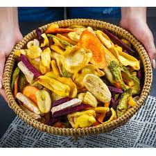
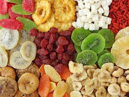
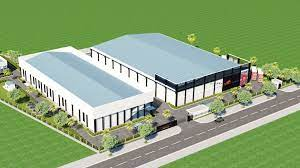
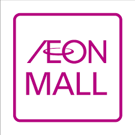
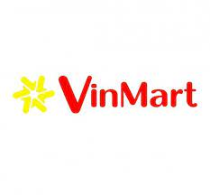
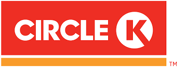

--- ABOUT US ---
MARU is proud to be one of the leading owners of post-harvest agricultural food processing technology in the country. For many years, we have gained achievements and certificates of food hygiene and safety in Vietnam and around the world such as:
Certificate of High Quality Vietnamese Goods.
Certificate of HACCP.
HALAL Food Certificate.
KOSHER certificate.
ISO 9001:2008 international standard.
FDA certificate.
USDA Organic Certificate.
EU Organic Certificate.
With the vision of raising the value of Vietnamese agricultural products to the world, MARU is increasingly trying to bring Vietnamese agricultural products to a new level.
MARU's mission is to bring consumers the spices of life that come from nature through our products. In addition, helping farmers, and finding output for post-harvest products, encouraging farmers to cultivate is also an important mission of MARU.
Customer Assurance: -
We are committed to doing our best until success, committed to always sticking with the Vision, Mission and cultural values of MARU, with MARU's team and customers.
We are committed to providing products in accordance with the best quality standards, always actively researching and offering product improvements to customers, and together with customers to develop new products to increase added value. for customers. We take the highest responsibility for product quality within the committed shelf life.
We always steadfastly develop the Company along the sustainable green agricultural value chain from seedling production, planting materials, production, processing and sales. Thereby bringing a happy, balanced life and added value to shareholders, employees, and farmers.
Purpose & Vision: -
MARU aims to pioneer the development of a digitized, green and sustainable agricultural value chain. Providing the world with natural, safe agricultural products and bringing a good life to everyone, especially is for farmers.

Our Key Strength: -
Dried fruit is fresh fruit, processed by industrial methods through low-temperature drying technology, losing part of the water in the fruit, removing some impurities. After drying reaches a certain humidity, it will be removed and cooled. The product will have a characteristic aroma, softness and suppleness, giving consumers a more convenient, easier-to-use product.

Dried fruit has many types: dried fruit with sugar, dried fruit without sugar, ... This is a type of food that has many advantages that fresh fruit does not have such as: can be used immediately, no processing required. sophisticated processing, can be preserved and used for a long time, etc. High nutritional efficiency thanks to the strict processing process of reputable and quality production companies.
Infrastructure: -
MARU dried fruit is a company producing dried fruit in Vietnam, one of the leading enterprises in developing the agricultural value chain from seeding, planting, processing and exporting fruit juice products. , frozen vegetables, dried fruit, nuts and fresh fruit. Maru dried fruit carries the vision of a pioneer corporation in developing a digital, green and sustainable agricultural value chain. Carrying with you the mission of providing the world with natural, safe agricultural products and bringing a good life to everyone, especially farmers.

Loyal Customer
|
 |
 |
 |
 |